市场态势
跟着爸爸走
亲子游有多火？
2014年，《爸爸去哪儿》带火“亲子游”！
- 9亿人口。2014年最新统计数据表明，全国0-14岁的儿童人数为3.14亿，按3口之家计算最大可能撬动9.4亿人口的市场，即便只是很小的转化率也可能产生出海量的需求。
- 10倍搜索量。百度指数显示，2014年爸爸忙疯了：有关“亲子游”的搜索量5月开始就出现井喷，与去年同期翻一番；
携程网显示，《爸爸去哪儿》节目播出后，携程攻略社区检索“亲子游”的次数是以往日均的10倍。 - 160%增长率。休闲旅客中，家庭亲子游的点评分享占到了近一半，并以160%的增长率高速增长。
2011-2013年“亲子游”的搜索指数增长趋势 2013年不同出游目的休闲旅客点评量增长趋势
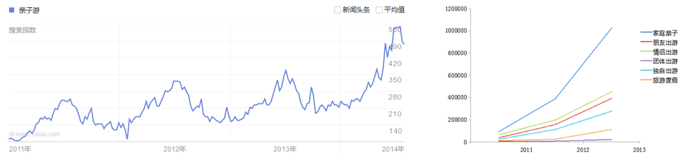数据来源：百度指数
跟着假期走
亲子游有多火？
周末 + 小长假 + 寒暑假 = 一年四季不停歇！
-
【春】踏青 / 赏花季
-
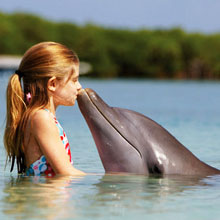
【夏】海岛 / 乐园季
-
【秋】郊游 / 采摘季
-
【冬】温泉 / 滑雪季
跟着热线走
亲子游有多火？
-
周边游 ―― 近郊休闲型（1-2天）
周边亲子游1-2日，周末为主，多为200km范围内的都市近郊短途游。如采摘、郊游、温泉、公园、游乐园等。
-
长线游 ―― 城市游乐型（3-7天）
最亲子目的地排名：上海、北京、南京、青岛、苏州、杭州、重庆、哈尔滨、厦门、成都。
最亲子景区排名：大连发现王国、上海欢乐谷、北京欢乐谷、长沙世界之窗、石家庄动物园、青岛海底世界、大连老虎滩海洋公园、金华横店影视城、常州中华恐龙园、成都欢乐谷。
―― 百度搜索指数《2014年五一小长假亲子游热度排名》
-
出境游 ―― 奢华度假型（6-15天）
2013年我国22%的出境游是亲子游。其中，休闲度假游以86%的高比例，成为家长最常选择的亲子游方式。热门玩法包括海岛游、乐园游、自然游、观光游、文化游、邮轮游、美食游等。
- 出境亲子游热度排行：
- 马来西亚、泰国、新加坡、日本、香港、韩国、美国、欧洲、澳大利亚、马尔代夫。
- 暑期亲子游热度排行：
- 日韩（含邮轮）、欧洲和海岛。
- 海岛亲子游热度排行：
- 日本冲绳、泰国普吉岛、华欣、苏梅岛、巴厘岛、长滩岛、马尔代夫、塞班、毛里求斯。
―― 去哪儿网《2013年出境亲子游调查报告》、蚂蜂窝《2013年度自助游数据报告》
跟着经济走
亲子游有多火？
经济决定出游，北京及沿海发达省市亲子游关注度高！
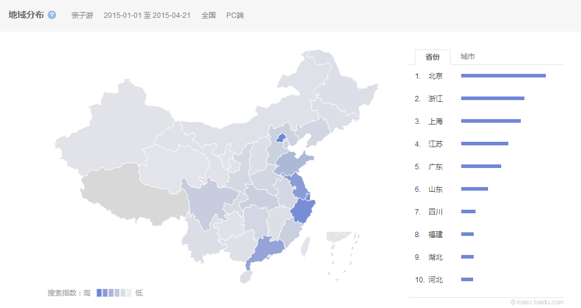两大保障 + 两大驱动
为什么这么火？
-
有钱wealthy
新一代父母更好的收入水平及享受型消费观
-
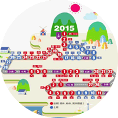
有闲leisure
孩子与家长共同的闲暇时间增多
-
渴望共度时光share
新一代父母对教育的重视和理解及自身旅游需求的提升
-
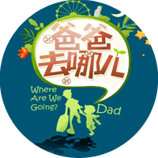
明星效应celebrity
真人秀《爸爸去哪儿》、《爸爸回来了》……
亲子游的价值在于：孩子可以开阔眼界提升素质，家长可以重温童年，且是父母与孩子情感交流的平台。
亲子游点燃了谁的消费欲望？
新生代父母 ―― 80后成主流！
- 80后年轻父母带子女出游意愿尤为强烈（30-39岁消费群体已过半）
- 女性是决定亲子出游的主力人群
- 周末和寒暑假是主流
数据来源：百度指数、去哪儿网《2014暑期亲子出游意愿调研报告》
百度指数：搜索“亲子游”的用户年龄分布
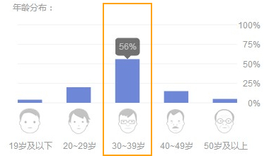80后的享受型消费观 ―― 安全最重要、移动端预订
- 安全第一。影响家长出游决策的主要因素依次为安全性、孩子是否喜欢、出游时间是否合适、好玩性、费用、目的地是否有意思、服务是否周到。
- 最看重行程的安逸性和舒适度。酒店设施和位置最受关注，儿童乐园、泳池、沙滩最能吸引搜索亲子游的游客。
- 移动端预订。同程旅游数据显示，2015年春季亲子游的订单中超过8成来自APP。其中，热门城市的“交通+酒店+景点”的组合套餐预订最热。
“住得安全舒适、玩得尽兴、出行方便更重要。”
在线路选择上最注重的是“孩子能否收获不一样的成长经历”。
―― 来自北京的“80后”妈妈徐女士
亲子游对酒店6大服务的关注满意度亲子游关注的酒店设施排名
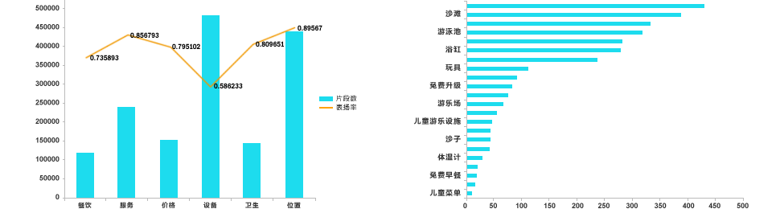数据来源：百度指数、去哪儿网《2014暑期亲子出游意愿调研报告》
80后的享受型消费观 ―― 花钱不吝惜、品质更重要
- 品质而理性。消费者在带子女出游时“更要求品质”，“更舍得花钱”，只有9%的家长在意价格。 2015春季亲子游，1/3平均花费3000元以上。
- 境外游不差钱。25.86%的家长表示自己每年带孩子出境旅游的支出达到5000元至1万元，近一半的家长表示自己的年度亲子游费用在1万至3万元之间，机票、酒店的总价约占总费用的一半以上。
“有了孩子后，在购买机票和酒店时就格外注意，一般都会选择直飞航班，以及有完善儿童设施和服务的酒店。”
―― 来自广州的家长黄先生
亲子游平均花费亲子游出游选择
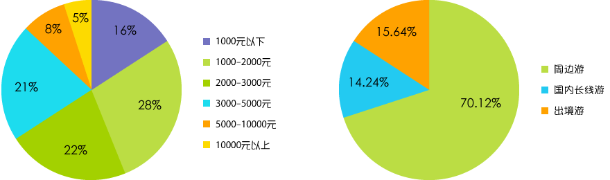数据来源：百度指数、同程旅游《2015春季亲子游需求报告》、去哪儿《2013出境亲子游调查报告》
80后的享受型消费观 ―― 热爱生活、分享生活
乐园最受欢迎，“萌宠”会加分。
亲子游的主题选择上，乐园类景点最受80后夫妻欢迎，而乐园内的羊驼、熊猫等“萌宠”最受小朋友游客的欢迎，为景区加分不少。
如上海锦江乐园举办的羊驼展、苏州乐园举办的喜羊羊模型展、扬州茱萸湾举办的企鹅展等。
“去游乐场正好碰到了羊驼展，草泥马真的好萌啊！拍了很多照片！那天大人小孩玩的都很开心，最重要是宝宝开心！”
―― 来自上海的“80后”妈妈王女士
亲子游热门主题人气排名
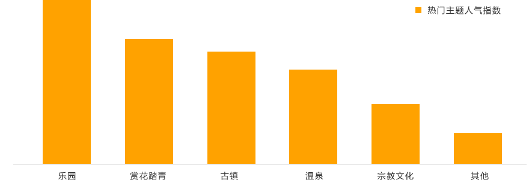数据来源：去哪儿网《2014暑期亲子出游意愿调研报告》、大众点评
亲子游出游新常态
-
低龄化
不能输在起跑线上，因此家长对教育日益重视，由出境游可见，有62%的家长计划在孩子零到5岁时就开始带孩子出境旅行。
-
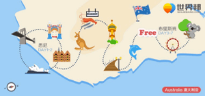
出境游
2015年选择出境春游的家庭比例超过了国内长线游。超过三分之一的家长2013年带着孩子出境旅游。99%的家长表示自己非常愿意带孩子出境旅游。75%的家长表示，自己愿意每年带孩子出境玩1至3次，近一半的家长选择5至7天的出境亲子游。
-
主题游
随着近年来自由行占据主要市场，定制化产品也越来越受到游客青睐，定制化产品的主题化细分成为一大趋势。如中青旅夏季亲子游产品不仅有艺术、名校、动植物、主题乐园等线路主题，还根据儿童不同年龄段的接受能力把亲子游分为1-3岁、3-6岁、6-12岁、12岁以上四个阶段，设计了适合不同年龄段儿童成长规律的主题游产品。
数据来源：同程旅游《2015春季亲子游需求报告》、去哪儿《2013出境亲子游调查报告》
问题在哪，商机就在哪。
“互联网+”带来了谁的商机？
存在问题1：换汤不换药
现状：
大部分旅行社的亲子游产品只是改一个名称，将原本已经成型的线路替换成一些简单的景点，并没有太多实质性的内容。
机会：
亲子游是针对性很强的旅游市场，传统旅行社受条件所限难以花费大量投入对产品进行精细化开发，程式化的导游带团模式，已远远不能满足小康家庭的需求。
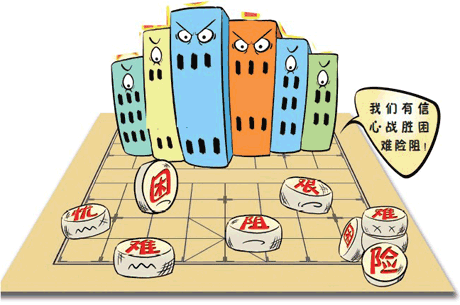
专业细分：
- 亲子农业
- 亲子户外
- 亲子民宿
- 亲子邮轮
- ……
存在问题2：品质or资质
现状：
目前微信组团、QQ组团等形式的活动日渐受到家庭游客关注，这些专注于亲子游市场的活动策划机构，把握了精准的市场定位，相对于大旅行社来说略胜一筹。
机会：
这种运作模式的合法性备受质疑。《旅游法》规定，不具备相应资质的机构不能经营旅游业务。
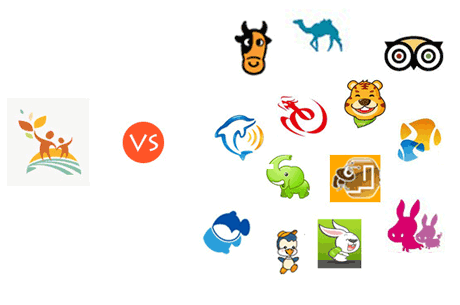
O2O融合：
- 线上社交平台
- 线下定制产品
四方势力瓜分亲子游市场
“互联网+”带来了谁的商机？
互联网对于传统行业是颠覆，也是促进。传统的亲子游无论是产品线路还是传播模式，都将面临颠覆式创新。
未来将涌现更多更专业的亲子游服务机构，线上平台整合线下资源将是大势所趋。
-
传统旅行社 / 景区
旅行社观光为主，较少考虑孩子需求，但产品丰富线路多所以很受欢迎。而景区越注重体验，如博物馆积极展开“奇妙夜”活动。
-
教育机构
寓教于乐，学员基数庞大，组织亲子游学有经验。新东方的亲子游学团一般都需要提前2-3个月预订，非常火爆。
-
专业亲子游机构
细致专业，为孩子量身定制。麦淘（麦田）亲子游更强调“强社交”和“C2B反向定制”；童子军户外网针对 4-12 岁的孩子及家长提供周末周边活动……
-
在线旅行商
亲子度假频道，以休闲亲子活动+度假产品为主。驴妈妈的驴悦亲子品牌；携程和去哪儿开设亲子游度假频道；周末去哪儿、遨游网、途牛……
最受欢迎：公园、主题乐园、科普馆
国外孩子假期去哪儿？
-
公园：
国外亲子游多选择自然环境优美人文景观优越的国家公园或风景区 -
主题公园：
国外亲子游青睐主题游乐园、海洋主题公园、动物园 -
科普馆：
国外亲子游喜欢去自然科学类的科普展馆
美国最受欢迎的十大亲子旅游目的地
| 序号 | 旅游目的地 |
|---|---|
| 1 | 横跨怀俄明州、蒙大拿州、爱达荷州三洲的黄石国家公园 |
| 2 | 缅因州 阿卡迪亚国家公园 |
| 3 | 新墨西哥 卡尔斯巴德洞穴国家公园 |
| 4 | 亚利桑那 大峡谷国家公园 |
| 5 | 南达科他州 拉舍莫尔山国家纪念碑 |
| 6 | 密歇根州 睡熊丘国家湖畔风景区 |
| 7 | 加州 约塞米蒂国家公园 |
| 8 | 佛罗里达 迪士尼魔术王国 |
| 9 | 蒙大拿冰川国家公园 |
| 10 | 夏威夷 珍珠港亚利桑那号纪念馆 |
注：《Family Fun》杂志评选结果。
加拿大最受欢迎的十大亲子旅游目的地
| 序号 | 旅游目的地 |
|---|---|
| 1 | 温哥华 温哥华水族馆 |
| 2 | 爱德蒙顿 西爱德蒙顿中心 |
| 3 | 亚伯达省 史前公园 |
| 4 | 安大略 北方科学馆 |
| 5 | 安大略 加拿大奇幻乐园 |
| 6 | 多伦多 蒙特罗多伦多动物园 |
| 7 | 安大略 尼加拉瓜瀑布海洋世界 |
| 8 | 魁北克 旺德公园 |
| 9 | 爱德华王子岛 安的绿色小屋 |
| 10 | 多伦多 蒙特罗多伦多动物园 |
国内外亲子游差异
国外孩子假期去哪儿？
| 差异 | 国外 | 国内 |
|---|---|---|
| 父母角色 | 互不干涉、各取其乐；孩子健康成长，家长也过得丰富多彩。 | 保姆、安全员；围着孩子转。 |
| 产品偏好 | 热衷户外、运动，注重素质教育与能力培养。国外最流行的暑期游方式，非房车露营莫属。 | 功利性与游乐性并重：花大价钱出国走马观花，热衷博物馆、科技馆和游乐场等产品。 |
| 出游时间 | 得益于相对自由的休假制度，出游时间相对分散，学龄前亲子游尤为突出。 | 出游时间集中在周末、小长假和寒暑假。 |
| 出游决策 | 孩子充分参与信息收集过程，决策参与度高；孩子较多，会选择满足多数孩子需求的目的地。 | 孩子较少参与旅游信息的收集工作；决策多由家长做主，孩子没有决定权。 |
| 服务设施 | 亲子游历史较长，专项服务体系相对成熟，度假村或酒店会针对儿童需求提供多种游乐区域。 | 专项服务设施不够完善，缺乏针对性，只有少数度假村或酒店针对儿童提供专业化服务。 |